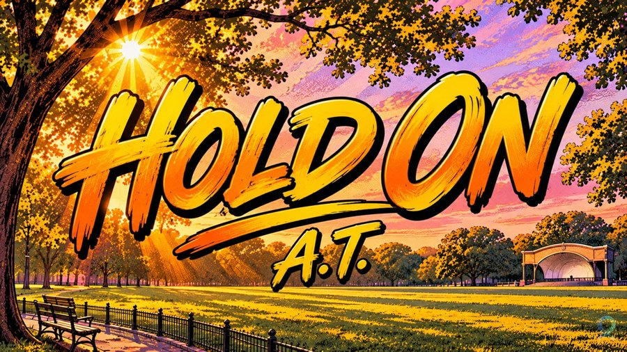

Track 11 · My Turn
Hold On
Nothing worth having comes without a struggle. A mother pulling double shifts, a young man with an eviction notice on his door, a student told she's wasting her time, a corner store owner sweeping up broken glass, a fighter on the canvas, a young woman learning to walk again. A.T. raps them through the night, and when the sun comes up they are all in the crowd at her summer show at the Prospect Park Bandshell in Brooklyn. Then one more face shows up at the back of the crowd.
 Watch the official video
Watch the official video
Lyrics
[Intro]
Yeah...
This one's for everybody still out there fightin'
They told you that you wouldn't make it
Look at you
Hold on... uh
[Verse 1]
Yeah, they called me a long shot, look at me now
Same kid with the hole in her kicks, holdin' it down
Mama pullin' double shifts just to keep on the lights
I'm at the kitchen table scribblin' rhymes in the night
Landlord knockin' on the door like the rent was a crime
Teacher said I'm wastin' it, I said I'm investin' my time
Every "no" was a brick, so I stacked me some stairs
Every time I hit the floor, I got up out of there
Cold winter, no heat, I could see my own breath
Wrote a verse in my coat, put my fear to the test
They said, "Girl, where you goin' with that fairy tale dream?"
I said watch, every winter gotta turn into spring
Lost a friend, lost a job, lost a couple of fights
But I never lost the vision, kept my eyes on the lights
So when the city get heavy and the walls start to close
I hear Grandma in my ear, she said, "Baby, hold on"
[Hook]
Hold on, the night get dark but the sun gon' rise
Keep pushin', you gon' make it, keep your dream alive
Hold on, the night get dark but the sun gon' rise
Keep pushin', you gon' make it, keep your dream alive
Hold on, the night get dark but the sun gon' rise
Keep pushin', you gon' make it, keep your dream alive
Hold on, the night get dark but the sun gon' rise
Keep pushin', you gon' make it, keep your dream alive
[Verse 2]
Uh, nothin' worth havin' ever came to you free
Diamonds made under pressure, and that pressure was me
Took the train with a demo, and a dollar, and a prayer
Got turned down at the door, so I rapped on the stair
Hustle in my DNA, I ain't built to fold
Twenty somethin' with a vision and a hundred year soul
I been broke, I been tired, I been doubted, been played
But a setback's just a setup for the comeback I made
When the night get the darkest, that's right before dawn
Every scar is a lesson, every tear made me strong
I ain't stoppin' at the red light, I'm keepin' the pace
Got the finish in my sights, see the win on my face
Pressure bust pipes, but it's makin' me shine
Every hill that I climbed only sharpened my mind
So if you down on your luck and you can't see the sun
Hold your head, hold your ground, girl, your time gon' come
[Hook]
Hold on, the night get dark but the sun gon' rise
Keep pushin', you gon' make it, keep your dream alive
Hold on, the night get dark but the sun gon' rise
Keep pushin', you gon' make it, keep your dream alive
Hold on, the night get dark but the sun gon' rise
Keep pushin', you gon' make it, keep your dream alive
Hold on, the night get dark but the sun gon' rise
Keep pushin', you gon' make it, keep your dream alive
[Bridge]
The sun always comes up, no matter how dark the night (mm)
Nothin' worth havin' ever comes without a fight
So hold on (hold on), hold on (hold on)
The morning's comin', baby, hold on
[Verse 3]
Look, the storm don't last, but the roots run deep
I'm the rose out the concrete, I broke through the street
Every bill on the counter, every cold empty fridge
Every night that I cried, I was buildin' a bridge
Now the mic in my hand feel like keys to the gate
All the ones who said "never" gotta stand there and wait
I ain't braggin', I'm just sayin' what the struggle can do
If it made a way for me, it can make one for you
So write it on the wall, put it up on the mirror
Every mornin' that you wake, your vision get clearer
Keep your circle real tight, keep your faith even tighter
When the night is the blackest, the stars shine brighter
Ain't no shortcut to it, gotta walk through the fire
Every step that I take only lift me up higher
So when the world say "quit" and your legs wanna give
Look 'em dead in they face and you tell 'em, "I live"
[Hook]
Hold on, the night get dark but the sun gon' rise
Keep pushin', you gon' make it, keep your dream alive
Hold on, the night get dark but the sun gon' rise
Keep pushin', you gon' make it, keep your dream alive
Hold on, the night get dark but the sun gon' rise
Keep pushin', you gon' make it, keep your dream alive
Hold on, the night get dark but the sun gon' rise
Keep pushin', you gon' make it, keep your dream alive
[Outro]
The sun gon' rise
Hold on
Hold on
A.T.
Written by Grey Beard and A.T. ℗ & © 2026 Threadia AI, Inc. All rights reserved.